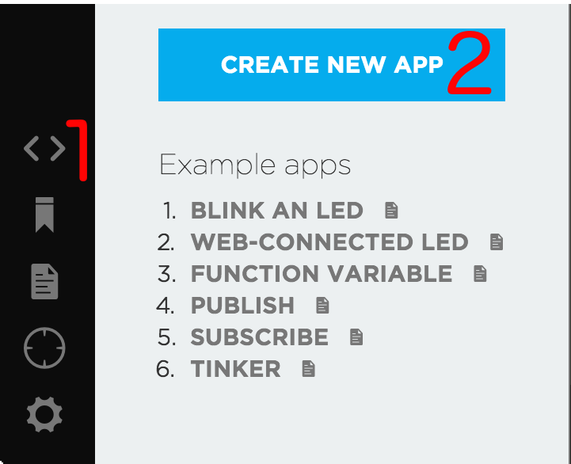
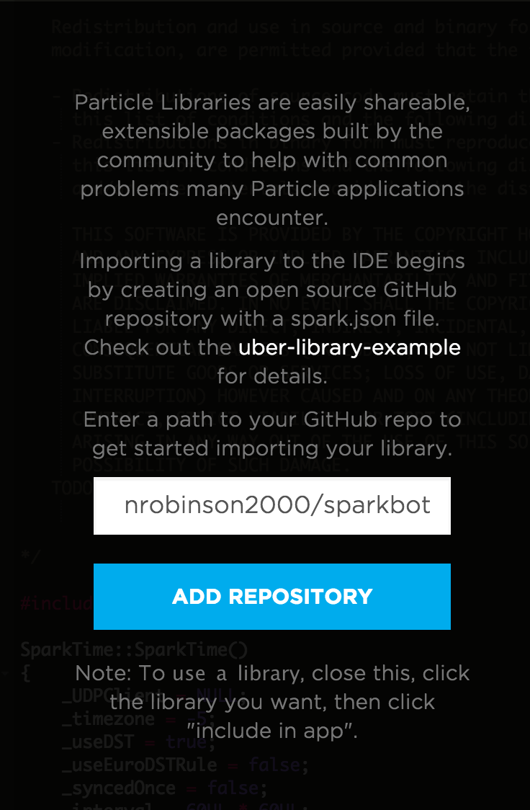
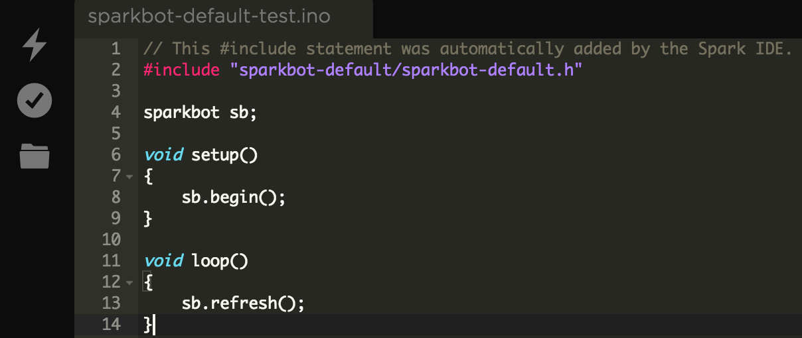

SparkBot Default
The official SparkBot code library for the Particle IDE.
Project maintained by nrobinson2000
About:
- This is the original library for the SparkBot by Nathan Robinson. This library contains all of the necessary processes, cloud functions and variables to simplify the use of SparkBot.
- This library is written in C++, developed by Nathan Robinson for use with the Particle web IDE and Particle DEV.
Installing:
- SparkBot Default can be used with both Particle's web IDE, and Particle DEV, their amazing IDE based on Github Atom.
Installation on Web IDE:
1. Log into the web IDE on your browser.
2. Create a new app by clicking on the code tab and clicking on the create new app button. (You may have to scroll down.)

3. Name your app.
4. Import SparkBot Default:
Click on the libraries tab on the left, and then click on the blue contribute library button. For the user_name/repo_name box, enter nrobinson2000/sparkbot-default.

After clicking on the blue Add Repository button, click on the import button on the left. Click the Got it, proceed button to continue.
Click on the Include in app button, and select the app you recently made. Click the Add to this app to continue.
5. Use SparkBot Default:
In order to properly use SparkBot Default there are some mandatory lines you must add to your app. First of all, you must addsparkbot sb;right after the#includestatement. This creates "sb" an object of class sparkbot, so you can just do stuff likesb.WHATEVER();Next, you must addsb.begin();inside of the setup function. This properly starts SparkBot, intializing the servos, sensors, lights etc. Third, you must addsb.refresh();inside of the loop function. This refrshes important variables like brightness, and updates the time it has been awake, checking if it is time for the SparkBot to go into sleep mode.

Your code should look like this:

Congratulations, you have now installed SparkBot Default for the Particle web IDE, and you have created your first app!
Usage:
- #include "sparkbot-default.h" // Import the sparkbot-default library.
- sparkbot sb; // Create sb, an object of the sparkbot class.
- sb.begin(); // This initializes the SparkBot.
Additional processes:
- sb.initSlave(); // Configure this SparkBot as a slave bot.
- sb.sync(); // Master sync command. Sync other slave bots to the settings of this SparkBot.
- sb.startLeftButton(); // Start the light switching process.
- sb.startRightButton(); // Start the Master bot process.
Cloud API:
- SparkBot Default allows SparkBot to be easily used with the Particle API, allowing users to montior variables, call functions and remotely control SparkBot, giving wide control over its actions.
- Using Particle's API is simple, everything you need to know can be found on the Particle API page.
- Below are the cloud functions and variables that are included in SparkBot Default.
SparkBot cloud Functions:
- "moveNeck", Calls moveNeckCloud(int), integer from 0-180
- "moveRight", Calls moveRightCloud(int), integer from 0-180
- "moveLeft", Calls moveLeftCloud(int), integer from 0-180
- "moodlights", Calls moodlights(red, green, blue), 3 RGB values from 0-255
- "checkOnline", Calls the checkOnline function, which updates "onlineBots".
SparkBot cloud Variables:
- "neck", returns the neckAngle of NECKSERVO
- "rightArm", returns the rightArmAngle of RIGHTSERVO
- "leftArm", returns the leftArmAngle LEFTSERVO
- "brightness", returns the brightness of PHOTORESISTOR
- "onlineBots", returns the number of online SparkBots, checkOnline() must be called first to update the number.
More functions:
- There are many more SparkBot default functions, not all of them are cloud functions, but there are helper processes and functions that will make programming SparkBot less difficult.
- A look at the Sparkbot Default header file should give you an idea of the included functions.